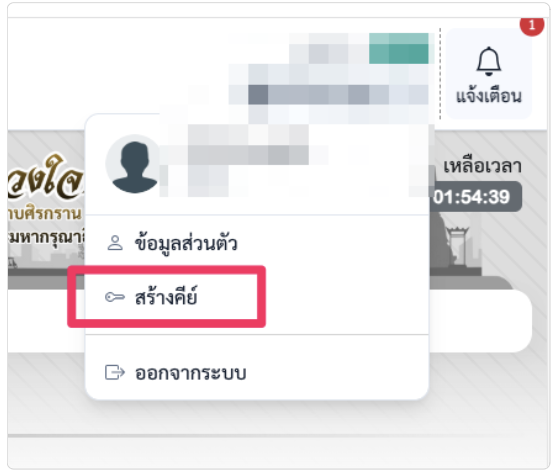
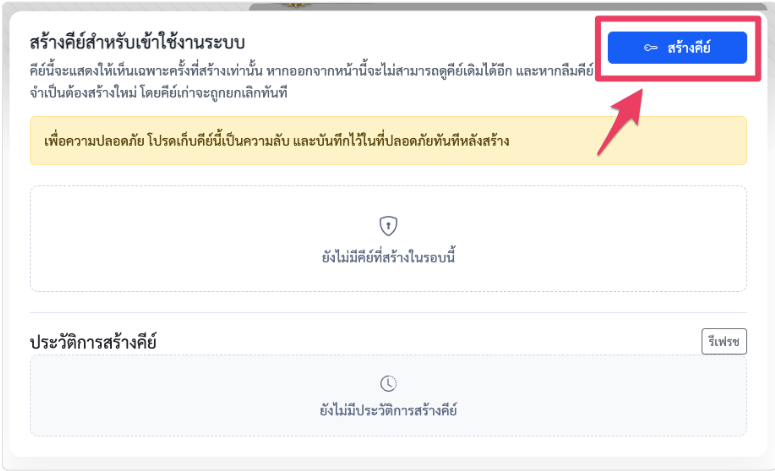
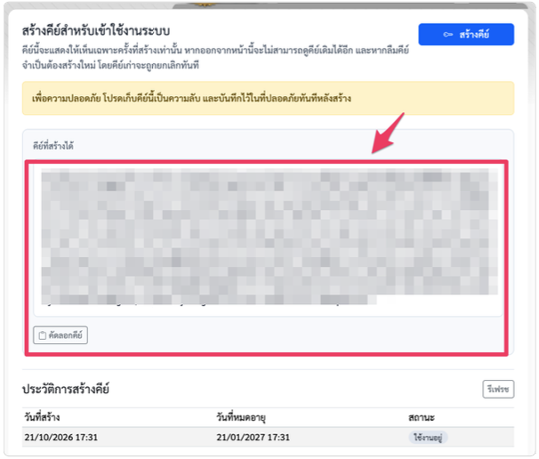

การส่งข้อมูล 43 แฟ้มผ่าน API
สำหรับหน่วยบริการที่ต้องการส่งไฟล์ 43 แฟ้มเข้าสู่ระบบ HDC โดยใช้คำสั่ง (Command Line / Script) แทนการอัปโหลดผ่านหน้าเว็บไซต์
ภาพรวมขั้นตอน
- สร้างคีย์ (API Key) จากหน้าเว็บไซต์ HDC
- คัดลอกคีย์ ไปเก็บรักษาไว้ในที่ปลอดภัย
- เรียกใช้งาน API โดยใช้คีย์เพื่อส่งไฟล์
.zipข้อมูล 43 แฟ้ม
ขั้นที่ 1: เปิดเมนูสร้างคีย์
เข้าสู่ระบบ HDC ตามปกติ จากนั้นคลิกที่ ชื่อผู้ใช้งาน บริเวณมุมขวาบน แล้วเลือกเมนู สร้างคีย์

ขั้นที่ 2: กดปุ่มสร้างคีย์
ในหน้า สร้างคีย์สำหรับเข้าใช้งานระบบ ให้คลิกปุ่ม สร้างคีย์ บริเวณมุมขวาบน

ข้อควรระวังสำคัญ
คีย์จะแสดงให้เห็นเพียงครั้งเดียวตอนที่กดสร้างเท่านั้น หากออกจากหน้านี้ไปแล้วจะไม่สามารถกลับมาดูคีย์เดิมได้อีก กรณีที่ลืมคีย์จำเป็นต้องกดสร้างคีย์ใหม่ ซึ่งจะส่งผลให้คีย์เก่าถูกยกเลิกและใช้งานไม่ได้ทันที
ขั้นที่ 3: คัดลอกและเก็บรักษาคีย์
เมื่อระบบสร้างคีย์เสร็จสิ้น รหัสคีย์จะแสดงในกรอบ คีย์ที่สร้างได้ ให้คลิกปุ่ม คัดลอกคีย์ แล้วนำไปบันทึกเก็บไว้ในที่ปลอดภัยทันที

- อายุการใช้งาน: ด้านล่างจะมีตาราง ประวัติการสร้างคีย์ แสดงวันที่สร้าง วันหมดอายุ และสถานะ โดยคีย์จะมีอายุการใช้งานประมาณ 3 เดือน (เช่น สร้างวันที่
21/10/2026จะหมดอายุวันที่21/01/2027) เมื่อใกล้ครบกำหนดให้เข้ามาสร้างคีย์ใหม่
การรักษาความปลอดภัย
ห้ามส่งคีย์ให้ผู้อื่น ห้ามโพสต์ลงในกลุ่มแชท และห้ามบันทึกไว้ในไฟล์ที่บุคคลอื่นสามารถเปิดอ่านได้ เนื่องจากผู้ที่มีคีย์จะสามารถส่งข้อมูลเข้าสู่ระบบในนามหน่วยบริการของท่านได้ทันที
ขั้นที่ 4: ส่งไฟล์ผ่าน API
รายละเอียดการเชื่อมต่อ (API Endpoint)
- URL:
https://api-center-hdc.moph.go.th/v1/api/upload/upload43 - Method:
POST - Header:
Authorization: Bearer <คีย์ของท่าน> - รูปแบบข้อมูล (Content-Type):
multipart/form-data - ชื่อฟิลด์ไฟล์ (Field Name):
files - ไฟล์ที่ส่ง: ไฟล์
.zipมาตรฐาน 43 แฟ้มที่ส่งออกจากโปรแกรมของหน่วยบริการ (เช่นF43_12345_25690101120000_1700000000000.zip)
ตัวอย่างคำสั่งบน macOS หรือ Linux
curl --request POST \
--url [https://api-center-hdc.moph.go.th/v1/api/upload/upload43](https://api-center-hdc.moph.go.th/v1/api/upload/upload43) \
--header 'Authorization: Bearer YOUR_API_KEY' \
--header 'Content-Type: multipart/form-data' \
--form files=@/Users/name-u/Downloads/F43_12345_25690101120000_1700000000000.zip
ตัวอย่างคำสั่งบน Windows (Command Prompt)
curl --request POST ^
--url [https://api-center-hdc.moph.go.th/v1/api/upload/upload43](https://api-center-hdc.moph.go.th/v1/api/upload/upload43) ^
--header "Authorization: Bearer YOUR_API_KEY" ^
--header "Content-Type: multipart/form-data" ^
--form files=@C:\Users\name-u\Downloads\F43_12345_25690101120000_1700000000000.zip
วิธีแก้ไขคำสั่งก่อนนำไปใช้งาน
- แทนที่คำว่า
YOUR_API_KEYด้วยคีย์ที่คัดลอกไว้ในขั้นที่ 3 (ต้องเว้นวรรค 1 เคาะหลังคำว่าBearer) - แก้ไขที่อยู่ไฟล์ (Path) หลังเครื่องหมาย
@ให้ตรงกับตำแหน่งไฟล์.zipในเครื่องของท่าน - หากชื่อโฟลเดอร์หรือที่อยู่ไฟล์มีช่องว่าง (Space) ให้ใส่เครื่องหมายคำพูด (
"...") ครอบทั้งค่า เช่น--form "files=@C:\My Files\F43.zip"
ตัวอย่างการส่งด้วย Python (แบบไม่สร้างไฟล์ลงเครื่อง)
เหมาะสำหรับระบบอัตโนมัติที่ดึงข้อมูลจากฐานข้อมูลแล้วส่งต่อทันที โดยตัวโปรแกรมจะบีบอัดสร้างไฟล์ .zip ไว้ในหน่วยความจำ (In-Memory) แล้วส่งขึ้น API โดยตรง ทำให้ไม่มีไฟล์ตกค้างในเครื่องเซิร์ฟเวอร์
1. ติดตั้งไลบรารี (ทำครั้งเดียว)
pip install requests
2. โค้ดโปรแกรม (upload43.py)
import io
import os
import zipfile
import requests
API_URL = "[https://api-center-hdc.moph.go.th/v1/api/upload/upload43](https://api-center-hdc.moph.go.th/v1/api/upload/upload43)"
# อ่านคีย์จาก Environment Variable เพื่อความปลอดภัย (ไม่ควรเขียนคีย์ไว้ในโค้ดโดยตรง)
API_KEY = os.environ["HDC_API_KEY"]
# ข้อมูลแต่ละแฟ้ม (ในงานจริงให้ดึงข้อมูลจากฐานข้อมูลของหน่วยบริการ)
# ตัวอย่างนี้เป็นข้อมูลสมมติ
files_43 = {
"PERSON.txt": "HOSPCODE|CID|PID|...\n12345|1111111111111|1|...\n",
"SERVICE.txt": "HOSPCODE|PID|SEQ|...\n12345|1|1|...\n",
}
# สร้างไฟล์ zip ในหน่วยความจำ (Memory Buffer)
buffer = io.BytesIO()
with zipfile.ZipFile(buffer, "w", zipfile.ZIP_DEFLATED) as zf:
for name, content in files_43.items():
zf.writestr(name, content)
buffer.seek(0)
# ชื่อไฟล์ zip ที่จะแจ้งให้ระบบทราบ (ใช้รูปแบบเดียวกับไฟล์ที่ส่งออกจากโปรแกรม)
zip_name = "F43_12345_25690101120000_1700000000000.zip"
response = requests.post(
API_URL,
headers={"Authorization": f"Bearer {API_KEY}"},
files={"files": (zip_name, buffer, "application/zip")},
timeout=300,
)
print(response.status_code)
print(response.text)
3. วิธีสั่งรันโปรแกรม
บน macOS หรือ Linux:
export HDC_API_KEY="YOUR_API_KEY"
python upload43.py
บน Windows (Command Prompt):
set HDC_API_KEY=YOUR_API_KEY
python upload43.py
ข้อสังเกตเพิ่มเติมสำหรับนักพัฒนา
- Header
Content-Type: ไม่ต้องกำหนดค่าเอง เนื่องจากไลบรารีrequestsจะสร้างmultipart/form-dataพร้อมตั้งค่าboundaryให้อัตโนมัติเมื่อส่งผ่านพารามิเตอร์files= - ชื่อฟิลด์: ต้องระบุเป็น
"files"เหมือนกับในคำสั่งcurl - กรณีมีข้อมูลเป็น Bytes อยู่แล้ว: หากรับไฟล์
.zipมาจากระบบอื่นในรูปแบบbytesในหน่วยความจำแล้ว สามารถข้ามขั้นตอนการสร้างzipfileและส่งio.BytesIO(ข้อมูล_bytes)แทนตัวแปรbufferได้ทันที - โครงสร้างข้อมูล: รูปแบบข้อมูลในแต่ละแฟ้มต้องยึดตามโครงสร้างมาตรฐาน 43 แฟ้มฉบับที่ใช้งานอยู่ (โค้ดด้านบนเป็นการย่อเพื่อให้เข้าใจง่ายเท่านั้น)
ขั้นที่ 5: ตรวจสอบผลการส่งและการแก้ไขปัญหา
หลังจากสั่งรันคำสั่ง ระบบจะแสดงผลลัพธ์ตอบกลับทางหน้าจอ ให้ตรวจสอบข้อความหรือรหัสสถานะ (HTTP Status Code) เพื่อยืนยันว่าส่งไฟล์สำเร็จ
- ไม่มีสิทธิ์เข้าถึง (
401หรือ403): เกิดจากคีย์ไม่ถูกต้อง คีย์หมดอายุ หรือมีการกดสร้างคีย์ใหม่ทำให้คีย์เก่าถูกยกเลิก ให้ตรวจสอบความถูกต้องของคีย์ หรือทำการสร้างคีย์ใหม่ - แจ้งเตือนว่าหาไฟล์ไม่เจอ: ที่อยู่ไฟล์ (Path) หลังเครื่องหมาย
@ไม่ถูกต้อง ให้ตรวจสอบชื่อโฟลเดอร์และชื่อไฟล์อีกครั้ง (ระวังเรื่องช่องว่างในชื่อโฟลเดอร์) - ไม่พบคำสั่ง
curl: ระบบปฏิบัติการ Windows 10 ขึ้นไปจะมีคำสั่งcurlติดตั้งมาให้พร้อมใช้งานแล้ว หากเป็น Windows รุ่นเก่ากว่าจำเป็นต้องดาวน์โหลดและติดตั้งเพิ่มเติม
สรุปข้อควรจำ
- คีย์ดูได้เพียงครั้งเดียว ต้องกดคัดลอกและบันทึกเก็บไว้ทันทีหลังสร้าง
- เมื่อสร้างคีย์ใหม่ คีย์เก่าจะถูกยกเลิกทันที ต้องนำไปอัปเดตเปลี่ยนคีย์ในทุกเครื่องหรือทุกสคริปต์ที่ใช้ส่งข้อมูล
- คีย์มีวันหมดอายุ สามารถตรวจสอบวันหมดอายุได้จากตาราง ประวัติการสร้างคีย์
- เก็บรักษาคีย์ไว้เป็นความลับ ห้ามส่งต่อหรือเผยแพร่ให้บุคคลอื่นโดยเด็ดขาด